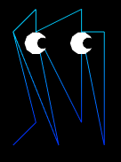

This is a depiction of the game Pacman rendered using webgl
The object I will elaborate on is the ghost(s). Each ghost is a set of vertices which when used with TRIANGE_STRIP option creates the body shape. I start in the upper left corner and make a trapazoid shape with verices, then once at the far right vertex, I create the lower body. This can be seen in the picture below. The body uses the multicolored shader in which I set the blue ghost to have a darker lower body and lighter upper body, and for the pink ghost to have the opposite effect. The eyes are created from two circles layered on top of each other. The larger circle is the white, and the pupils are the smaller black color. 